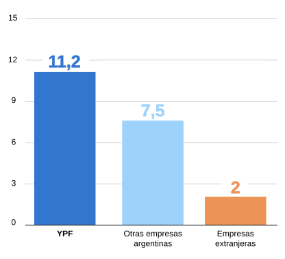
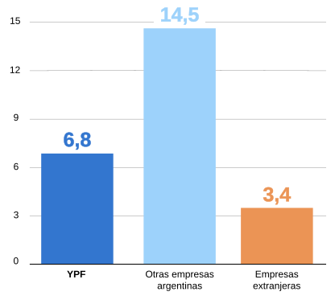
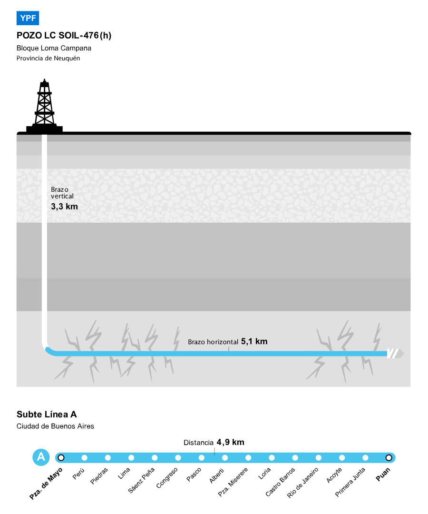
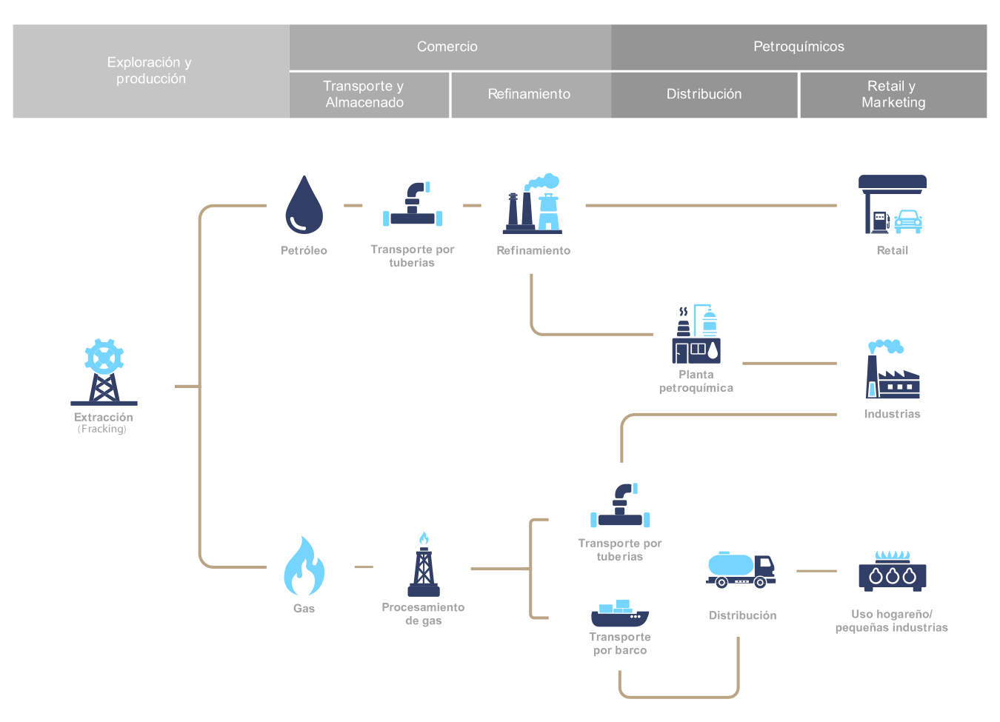

La cuenca neuquina es la principal productora de hidrocarburos de Argentina y tiene un potencial exportador similar al del agro.
Por Data Journalism Visualization Bootcamp
El yacimiento petrolífero Vaca Muerta es una formación geológica de shale, un tipo de roca sedimentaria, con una superficie total aproximada de entre 30.000 y 36.000 kilómetros cuadrados a 3000 metros de profundidad que comprende parte de las provincias de Neuquén, donde se encuentra su mayor área, Río Negro, La Pampa y Mendoza, en la República Argentina.
Vaca Muerta da vida a la Cuenca Neuquina, una de las cinco cuencas sedimentarias productoras de hidrocarburos en Argentina, que tiene la particularidad de ser una formación de shale, esquisto, un tipo de roca en la cual el gas y el petróleo no se almacenan en un reservorio, sino que la extracción es directamente desde los sedimentos de la roca madre.
En la extracción convencional de gas y petróleo, la que reinó en Argentina hasta el 2020, y que tuvo su auge en los años ‘90, los recursos están en reservorios con porosidad y permeabilidad relativamente buenas, de modo que los fluidos fluyen con facilidad a los pozos y se extraen con la técnica tradicionales de perforación vertical.
Con el shale y la extracción no convencional, los hidrocarburos se encuentran alojados en rocas con baja permeabilidad o muy compactas, donde no fluyen con facilidad y para su extracción se requiere de una técnica relativamente moderna, desarrollada desde mitad siglo pasado en la costa Este de Estados Unidos, conocida como fractura hidráulica o fracking, que consiste en perforación horizontal con muchas etapas o punciones a la roca.

La expansión de la producción en Vaca Muerta ha tenido un impacto profundo en la economía local y nacional, con un crecimiento sostenido en la producción de petróleo crudo y carburantes.
En mayo de 2024, el valor de las exportaciones de combustibles y energía se elevó un 51.1%, alcanzando 892 millones de dólares. Este incremento se debe principalmente al aumento en el volumen exportado de petróleo crudo y carburantes, que creció un 59.6% y 45.1%, respectivamente. El dinamismo ha permitido que todos los subrubros de combustibles y energía ascendieran, salvo el gas de petróleo y otros hidrocarburos gaseosos. Además, la notable reducción en las importaciones de combustibles y lubricantes, que cayeron un 61.5% interanual en mayo, refuerza el papel clave de Vaca Muerta en la autosuficiencia energética del país.
Esta disminución se debe a una merma del 56.2% en las cantidades importadas y una reducción del 13.6% en los precios, principalmente en gas natural licuado y gaseoso. La disminución de las importaciones ha permitido un ahorro significativo de divisas, liberando recursos para otras áreas de la economía y contribuyendo a mejorar la balanza comercial de Argentina en un momento crítico.
4º
Reserva de petróleo
no convencional
en el mundo
2º
Reserva de gas natural
no convencional
en el mundo
La confirmación de las reservas de esquisto en Vaca Muerta, en 2012, dieron una nueva vida a la producción de hidrocarburos en Argentina. Mientras el método convencional agotaba sus recursos, el fracking dio vida a los reservorios. Desde entonces, el país es uno de los principales jugadores del tablero global de gas y petróleo.
Con el no convencional el 80% del material extraído es gas o petróleo y el 20% restante son fluidos utilizados en el proceso, mientras que en el convencional esa proporción es inversa.
El fracking es una técnica de extracción de hidrocarburos, que permite extraer grandes cantidades de gas y petróleo desde el subsuelo de rocas porosas a través de una rama horizontal. Requiere de la perforación de un pozo con un ducto vertical y luego uno horizontal, que mediante la inyección de agua, arena y otros fluidos permite la extracción de los hidrocarburos.
El fracking tiene costos más elevados que la técnica convencional, con casi un 50% más de inversión. Mientras que un pozo convencional requiere en promedio entre 8 y 12 millones dólares de inversión inicial, la fractura hidráulica demanda hasta 18 millones por pozo, dependiendo de la profundidad y fase. Pero su rentabilidad también es mayor por una serie de factores: permite extraer mayores cantidades de hidrocarburos, en un periodo más extenso de tiempo, ya que la vida útil de los pozos tiene una curva de declino más prolongada y el material extraído tiene una composición más alta de hidrocarburos.
Cifras en millones de metros cúbicos


Hasta el momento, el pozo con la rama lateral más larga en Vaca Muerta es LC SOil-476 (h) del yacimiento Loma Campana de YPF y que alcanzó 5114 metros horizontales, un poco más que la extensión de la línea A de subterráneos entre sus estaciones Plaza de Mayo y Puán. En total se trata de 8376 caños a más de 3200 metros de profundidad.

En el upstream, tanto el petróleo como el gas no convencional comparten los procesos de exploración y explotación. En esta etapa se identifican formaciones geológicas con potencial, como las lutitas, y se utilizan técnicas como la perforación horizontal y la fracturación hidráulica para liberar los hidrocarburos atrapados en la roca.
En el midstream, ambos requieren transporte desde el sitio de extracción hasta las plantas de procesamiento, pero aquí comienzan a diferenciarse. El petróleo se transporta mediante oleoductos o camiones cisterna hacia las refinerías, mientras que el gas natural se mueve a través de gasoductos o como gas natural licuado (GNL) hacia plantas donde se deshidrata, se eliminan impurezas y se separan los líquidos del gas.
En el downstream, el petróleo es refinado para producir combustibles como gasolina, diésel o queroseno, que luego se distribuyen y comercializan en mercados locales e internacionales. Por su parte, el gas es procesado para separar componentes como metano, etano o propano, y se comercializa para uso industrial, generación eléctrica o exportación.

En diciembre de 2019, Neuquén se consolidó como la provincia que más hidrocarburos generó en el país, superando a Chubut.
Desde entonces, y de la mano de Vaca Muerta, comenzó a marcar el horizonte productivo de gas y petróleo.
En septiembre de 2025 alcanzó un récord de producción de petróleo con un total de 566.967 barriles por día, de los cuales 545.133 son producto de la actividad no convencional, lo que representa el 67% del total del país.
En el próximo lustro se espera que las exportaciones derivadas de los hidrocarburos de Vaca Muerta, el GNL y el crudo, podrían alcanzar los 40 mil millones de dólares y revertir la ecuación con las divisas que genera el agro.
Las estimaciones de la Bolsa de Comercio de Rosario marcan que en 2030 ingresarán 74 mil millones de dólares por exportaciones, el 53%, unos 39,2 miles de millones de dólares, serán del sector energético, mientras el 47% del campo.